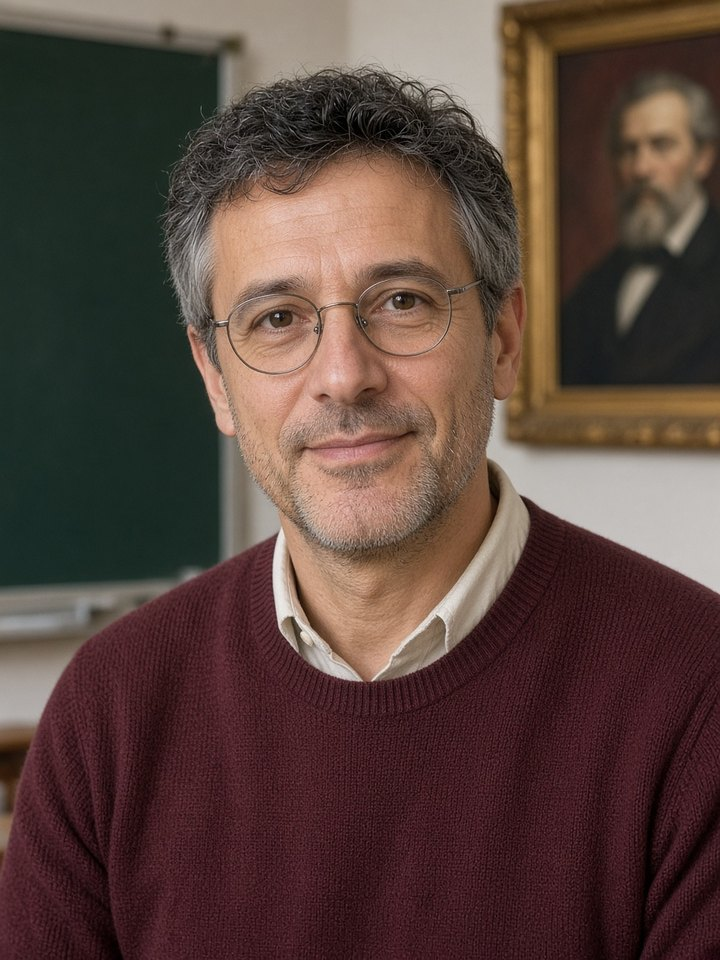
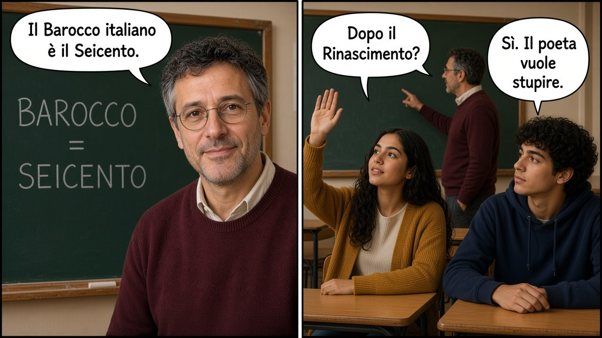
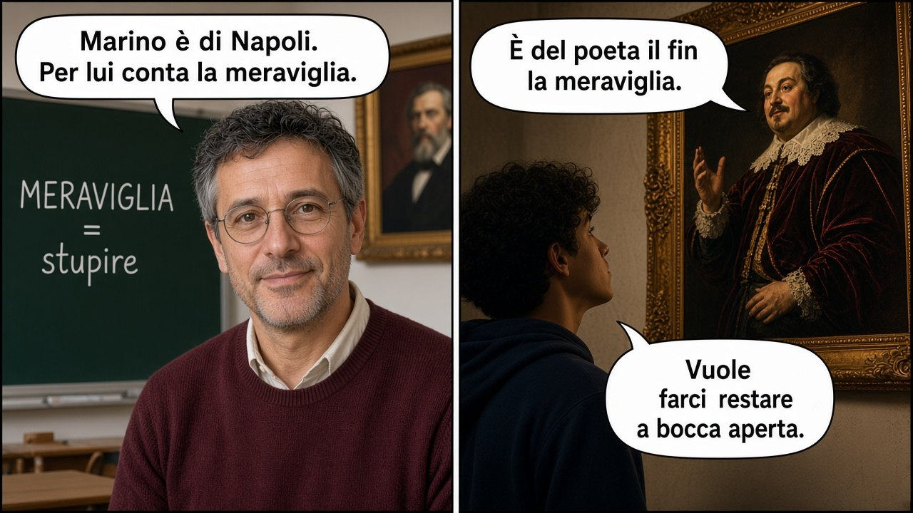
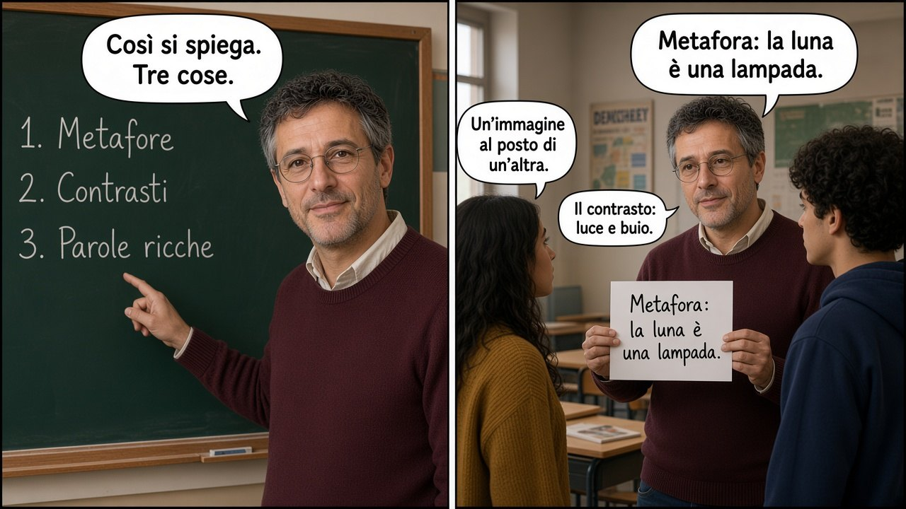
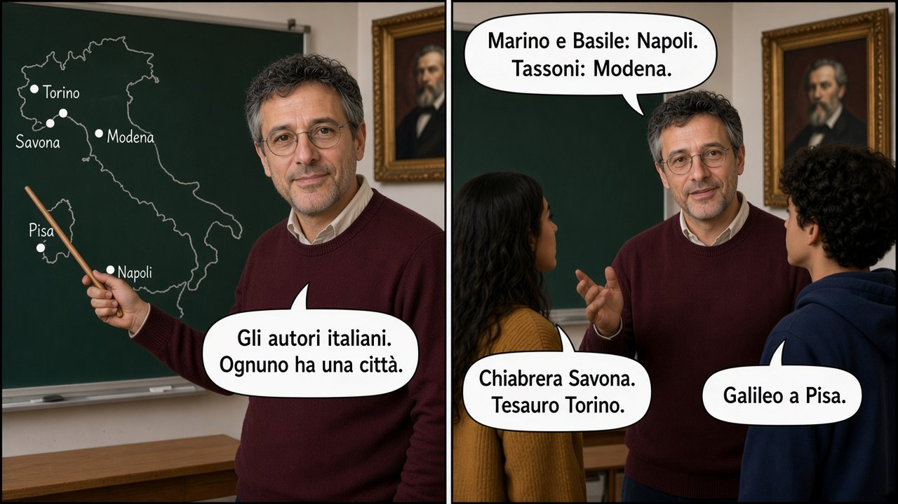
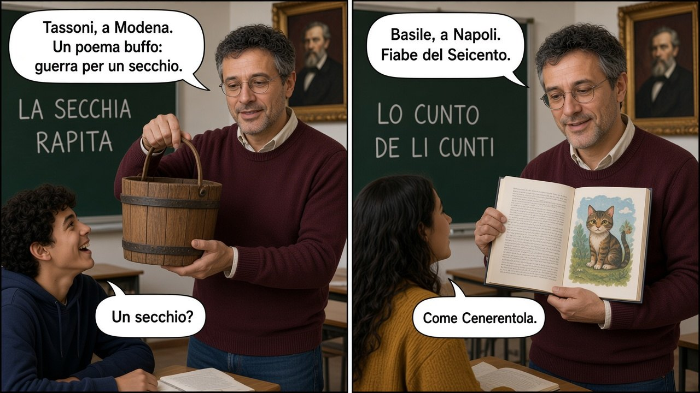
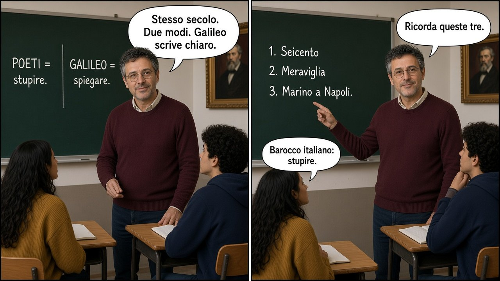

Fumetto · 6 tavole
Il Prof spiega
Lezione in classe: che cos’è il Barocco italiano, la meraviglia, gli autori, Galileo.
Scorri o tocca i lati. Pizzica per ingrandire. «Schermo intero» sul telefono.

Fumetto · 6 tavole
Lezione in classe: che cos’è il Barocco italiano, la meraviglia, gli autori, Galileo.
Tavola 1 di 6






Scorri o tocca i lati. Pizzica per ingrandire. «Schermo intero» sul telefono.